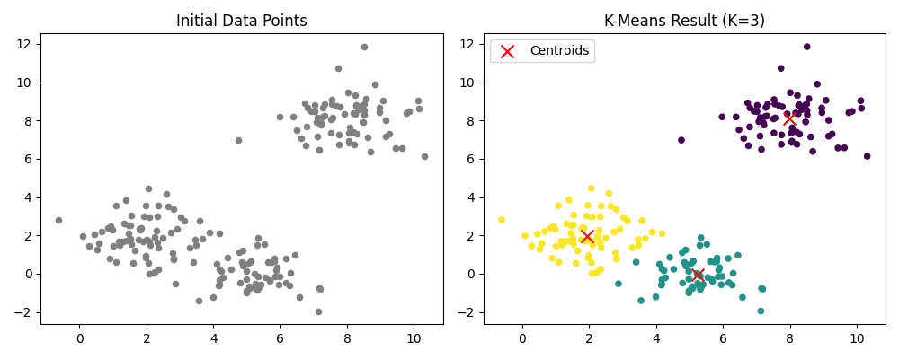
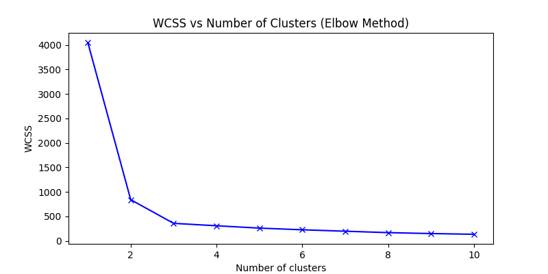

Understanding clustering, centroid optimization, the elbow method, and silhouette analysis for selecting the optimal number of clusters.
Hamza Arif
Unsupervised LearningK-Means is an unsupervised machine learning algorithm used to divide data into multiple clusters based on similarity. Instead of using labeled outputs, the algorithm discovers hidden structure directly from the dataset.
Applications include customer segmentation, recommendation systems, image compression, document clustering, and anomaly detection.
K-Means groups data points according to similarity using the distance from cluster centroids.
Goal: create compact clusters with minimum internal distance.

Choosing K is extremely important because it directly affects cluster quality.

Silhouette score measures how well a point fits within its assigned cluster compared to neighboring clusters.
K-Means Clustering and Model Selection
9 / 9